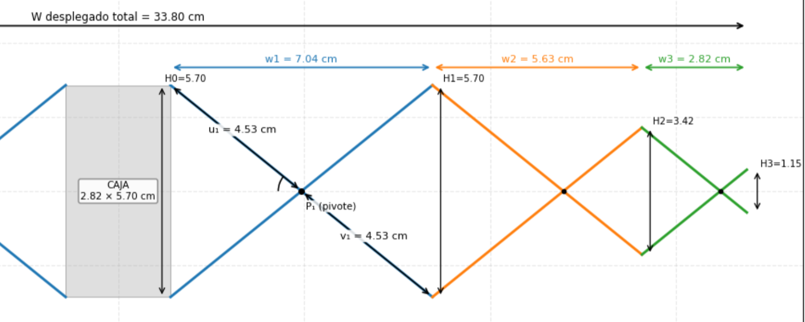
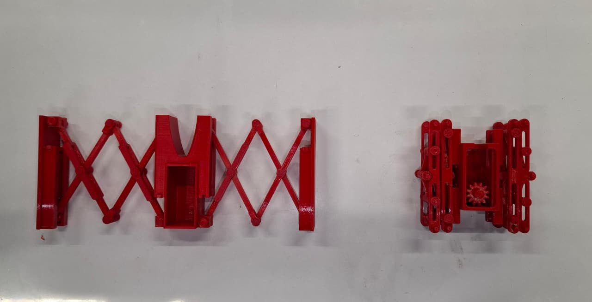
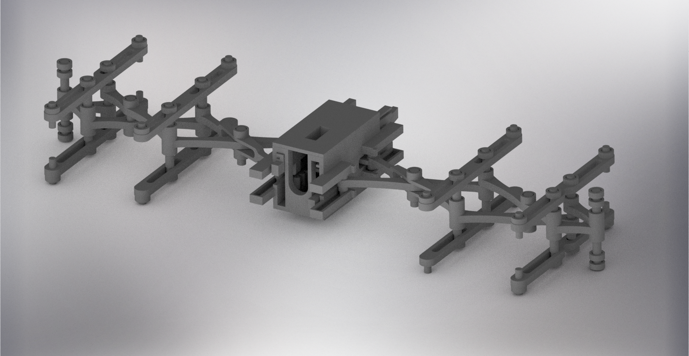
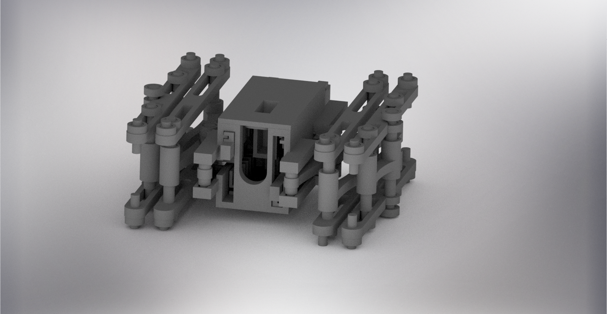

Proyecto destacado
Carcasa y mecanismo de despliegue de antena para un nanosatélite
Resumen
Diseñé, optimicé y prototipé una carcasa con un mecanismo de tijera para desplegar la antena de un nanosatélite. Un actuador de piñón-cremallera, reducido a un solo grado de libertad, mueve simultáneamente los cuatro brazos de la tijera. Todo el sistema se imprimió en 3D en PETG, sin piezas metálicas, para evitar interferencias con el campo electromagnético de la antena.
En estado plegado, el conjunto cabe en una envolvente de 10 × 10 cm; el diseño final ocupa 6,2 × 9,336 cm. Desplegado, alcanza aproximadamente 33,8 cm.
1. Contexto y requerimientos
La antena debía permanecer plegada dentro de la carcasa durante el lanzamiento y desplegarse una vez en órbita. Los requerimientos, definidos en el documento de dimensiones, fueron:
- Estado desplegado: tres etapas de tijera por lado, con anchos de 7,04 cm, 5,63 cm y 2,82 cm, para aproximadamente 33,81 cm en total. Las piezas de extremo de 5 mm eran preliminares y no se incluyen en esa longitud.
- Caja central: 2,82 cm de ancho, 5,7 cm de alto y 3,34 cm de espesor para alojar el sistema de accionamiento.
- Estado plegado: caber en una envolvente máxima de 10 × 10 cm.
- Material: fabricación completamente por impresión 3D y sin elementos metálicos, ya que el campo electromagnético podía afectar el funcionamiento de la antena.

2. Modelado cinemático
Modelé la tijera como un mecanismo trapezoidal de un solo grado de libertad: un ángulo θ común a todas las etapas, con pivotes desplazados del centro de cada barra. Las longitudes de brazo ui y vi se obtienen por trigonometría a partir de los anchos desplegados y garantizan compatibilidad geométrica entre etapas consecutivas: u2 = v1 y u3 = v2.
El modelo también considera el ancho real de las barras (3 mm), la separación mínima entre barras de una misma capa para evitar interferencias y un margen respecto a los 90° de plegado. A 90° el mecanismo alcanza una singularidad o punto muerto y pierde control.
3. Optimización
En Python, con NumPy, SciPy, Pandas y Matplotlib, optimicé los ángulos de despliegue y plegado:
- Barrido global: exploré todas las combinaciones factibles de ángulos para localizar un buen punto sin depender de una semilla inicial.
- Refinamiento con SLSQP: minimicé el área plegada W·H, sujeta a W ≤ 10 cm y H ≤ 10 cm, y conservé el mejor resultado entre el barrido y el refinamiento.
- Verificaciones automáticas: comprobé los anchos desplegados, la compatibilidad de los brazos, la igualdad de los tres θi, la envolvente y el margen a la singularidad.
- Resultados visuales: generé la trayectoria de plegado, el frente de Pareto, la sensibilidad al ancho de barra y una animación interactiva del despliegue con controles de reproducción y pausa.
Resultado del diseño: θdep = 38,996°; θfold = 86° (margen de 4° respecto al punto muerto); ancho plegado de 6,2 cm; altura plegada de 9,336 cm; área plegada de aproximadamente 57,9 cm²; barra de 0,3 cm y recorrido de los pines en la base de 1,668 cm.
| Etapa | Segmento inferior u (cm) | Segmento superior v (cm) | Longitud L (cm) | Ancho desplegado w (cm) |
|---|---|---|---|---|
| 1 | 4,529 | 4,529 | 9,058 | 7,04 |
| 2 | 4,529 | 2,715 | 7,244 | 5,63 |
| 3 | 2,715 | 0,914 | 3,629 | 2,82 |
4. Estudio de mecanismos y diseño del actuador
Analicé en MotionGen el comportamiento de la tijera y de varios mecanismos candidatos para accionarla. Comparé las trayectorias de los nodos y las posiciones plegada y desplegada, y descarté las configuraciones que no cumplían la envolvente o presentaban un comportamiento poco favorable.
.png)
.png)
Dimensioné el actuador en Python y Excel. La solución final integra dos mecanismos de piñón-cremallera, reducidos a un solo grado de libertad: un único movimiento de entrada acciona cuatro brazos de la tijera al mismo tiempo, dos por cada lado. Así, el despliegue es simétrico y sincronizado, sin varios actuadores ni componentes metálicos.
Diseño del piñón y la cremallera
Los dos mecanismos caben en la caja central, que deja 24,4 mm de ancho y 57 mm de longitud. El piñón tiene Z = 12 dientes, diámetro primitivo de 18 mm (módulo 1,5 mm) y ángulo de presión de 25°. Las cremalleras tienen 12 dientes en la longitud disponible, con paso de 4,71 mm.
- Sin socavado: el piñón tiene 12 dientes y el mínimo calculado es 11,2.
- Sin interferencia entre la punta de la cremallera y el círculo base del piñón.
- Relación de contacto de 1,49, por lo que siempre hay más de un diente en contacto.
- Juego circunferencial de 0,118 mm y radio de entalle compatible con la geometría de la cremallera.
- Cada cremallera avanza 56,5 mm por vuelta del piñón; el recorrido relativo entre ambas es de 113,1 mm por vuelta.
5. Fabricación y prototipado iterativo
Imprimí los prototipos en PETG con 30 % de relleno. Como las holguras y los elementos son muy pequeños, las tolerancias son justas; para lograrlas, recomiendo una boquilla de 0,2 mm.
El prototipo preliminar no cumplía todavía las dimensiones finales, pero permitió observar el comportamiento real del mecanismo, las holguras y la rigidez de las piezas impresas, además de planear los siguientes pasos. El prototipo final cumple el documento de dimensiones: la tijera queda plegada alrededor de la caja central, que aloja el piñón del actuador.

6. Herramientas y habilidades
Diseño CAD, síntesis y simulación de mecanismos en MotionGen, modelado cinemático y optimización numérica en Python (NumPy, SciPy, Pandas y Matplotlib), dimensionamiento de transmisiones piñón-cremallera en Python y Excel, impresión 3D en PETG, prototipado iterativo y diseño para manufactura aditiva con restricciones de material y tolerancias justas.


7. Aprendizajes
Pasar del modelo ideal al objeto físico exigió considerar el ancho de las barras, las holguras de impresión y el margen a la singularidad. El prototipo preliminar fue especialmente valioso: mostró fallas que la simulación no anticipaba y orientó el diseño final.